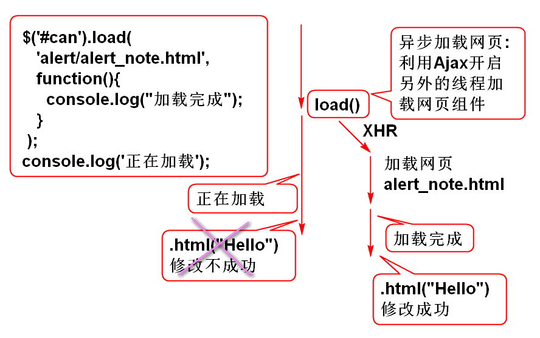

原理:
声明持久层方法 NoteDao
Note findNoteById(String noteId);
声明实体类Note
public class Note implements Serializable{
private static final long serialVersionUID = -8176239102696538864L;
private String id;
private String notebookId;
private String userId;
private String statusId;
private String typeId;
private String title;
private String body;
private Long createTime;
private Long lastModifyTime;
public Note() {
}
public Note(String id, String notebookId, String userId, String statusId, String typeId, String title, String body,
Long createTime, Long lastModifyTime) {
super();
this.id = id;
this.notebookId = notebookId;
this.userId = userId;
this.statusId = statusId;
this.typeId = typeId;
this.title = title;
this.body = body;
this.createTime = createTime;
this.lastModifyTime = lastModifyTime;
}
public String getId() {
return id;
}
public void setId(String id) {
this.id = id;
}
public String getNotebookId() {
return notebookId;
}
public void setNotebookId(String notebookId) {
this.notebookId = notebookId;
}
public String getUserId() {
return userId;
}
public void setUserId(String userId) {
this.userId = userId;
}
public String getStatusId() {
return statusId;
}
public void setStatusId(String statusId) {
this.statusId = statusId;
}
public String getTypeId() {
return typeId;
}
public void setTypeId(String typeId) {
this.typeId = typeId;
}
public String getTitle() {
return title;
}
public void setTitle(String title) {
this.title = title;
}
public String getBody() {
return body;
}
public void setBody(String body) {
this.body = body;
}
public Long getCreateTime() {
return createTime;
}
public void setCreateTime(Long createTime) {
this.createTime = createTime;
}
public Long getLastModifyTime() {
return lastModifyTime;
}
public void setLastModifyTime(Long lastModifyTime) {
this.lastModifyTime = lastModifyTime;
}
@Override
public int hashCode() {
final int prime = 31;
int result = 1;
result = prime * result + ((id == null) ? 0 : id.hashCode());
return result;
}
@Override
public boolean equals(Object obj) {
if (this == obj)
return true;
if (obj == null)
return false;
if (getClass() != obj.getClass())
return false;
Note other = (Note) obj;
if (id == null) {
if (other.id != null)
return false;
} else if (!id.equals(other.id))
return false;
return true;
}
@Override
public String toString() {
return "Note [id=" + id + ", notebookId=" + notebookId + ", userId=" + userId + ", statusId=" + statusId
+ ", typeId=" + typeId + ", title=" + title + ", body=" + body + ", createTime=" + createTime
+ ", lastModifyTime=" + lastModifyTime + "]";
}
}
声明SQL, NoteMapper.xml
<select id="findNoteById"
parameterType="string"
resultType="cn.tedu.note.entity.Note">
select
cn_note_id as id,
cn_notebook_id as notebookId,
cn_user_id as userId,
cn_note_status_id as statusId,
cn_note_type_id as typeId,
cn_note_title as title,
cn_note_body as body,
cn_note_create_time as createTime,
cn_note_last_modify_time as lastModifyTime
from
cn_note
where
cn_note_id=#{noteId}
</select>
测试 NoteDaoTest
@Test
public void testFindNoteById(){
String noteId = "019cd9e1-b629-4d8d-afd7-2aa9e2d6afe0";
Note note = dao.findNoteById(noteId);
System.out.println(note);
}
声明业务层方法 NoteService
Note getNote(String noteId)
throws NoteNotFoundException;
声明业务异常NoteNotFoundException
略...
实现方法 NoteServiceImpl
public Note getNote(String noteId)
throws NoteNotFoundException {
if(noteId==null||noteId.trim().isEmpty()){
throw new NoteNotFoundException("ID空");
}
Note note = noteDao.findNoteById(noteId);
if(note==null){
throw new NoteNotFoundException("id错误");
}
return note;
}
测试 NoteServiceTest
@Test
public void testGetNote(){
String noteId = "019cd9e1-b629-4d8d-afd7-2aa9e2d6afe0";
Note note = service.getNote(noteId);
System.out.println(note);
}
添加控制器方法 NoteController
@RequestMapping("/load.do")
@ResponseBody
public JsonResult load(String noteId) {
Note note = noteService.getNote(noteId);
return new JsonResult(note);
}
测试
http://localhost:8080/note/note/load.do?noteId=019cd9e1-b629-4d8d-afd7-2aa9e2d6afe0
http://localhost:8080/note/note/load.do
重构 showNotes 方法, 在显示时候将笔记的ID绑定到LI元素:
//将笔记ID绑定到li, 用在点击笔记时候显示笔记详细信息
li.data('noteId', note.id);
重构笔记列表li模板, 在li元素上增加 note 类:
var noteTemplate = '<li class="online note">'+
'<a>'+
'<i class="fa fa-file-text-o" title="online" rel="tooltip-bottom"></i> [title]<button type="button" class="btn btn-default btn-xs btn_position btn_slide_down"><i class="fa fa-chevron-down"></i></button>'+
'</a>'+
'<div class="note_menu" tabindex="-1">'+
'<dl>'+
'<dt><button type="button" class="btn btn-default btn-xs btn_move" title="移动至..."><i class="fa fa-random"></i></button></dt>'+
'<dt><button type="button" class="btn btn-default btn-xs btn_share" title="分享"><i class="fa fa-sitemap"></i></button></dt>'+
'<dt><button type="button" class="btn btn-default btn-xs btn_delete" title="删除"><i class="fa fa-times"></i></button></dt>'+
'</dl>'+
'</div>'+
'</li>';
在ready方法中添加事件监听 笔记列表的点击事件:
//监听笔记列表中的笔记点击事件,在点击时候加载显示笔记信息
$('#note-list').on( 'click','.note', loadNote);
添加笔记点击加载笔记的事件处理方法 loadNote
function loadNote(){
//获取当前点击的 li 元素
var li = $(this);
//获取在显示时候绑定到li中的笔记ID值
var id = li.data('noteId');
//设置选中高亮效果
li.parent().find('a').removeClass('checked');
li.find('a').addClass('checked');
var url = 'note/load.do';
var data= {noteId: id };
$.getJSON(url, data, function(result){
//console.log(result);
if(result.state==SUCCESS){
var note = result.data;
showNote(note);
}else{
alert(result.message);
}
});
}
添加显示笔记信息方法 showNote
function showNote(note){
//显示笔记标题
$('#input_note_title').val(note.title);
//显示笔记内容
um.setContent(note.body);
}
测试 ...
原理:

声明持久层方法 NoteDao
int addNote(Note note);
声明SQL, NoteMapper.xml:
<insert id="addNote"
parameterType="cn.tedu.note.entity.Note">
insert into cn_note
(cn_note_id,
cn_notebook_id,
cn_user_id,
cn_note_status_id,
cn_note_type_id,
cn_note_title,
cn_note_body,
cn_note_create_time,
cn_note_last_modify_time)
values
(#{id},#{notebookId},#{userId},
#{statusId},#{typeId},#{title},
#{body},#{createTime},
#{lastModifyTime})
</insert>
测试:
略...
添加业务方法 NoteService
public Note addNote(String userId,
String notebookId, String title)
throws UserNotFoundException,
NotebookNotFoundException;
提示: 方法的三个参数是根据对业务规程分析来确定的.
实现业务方法 NoteServiceImpl:
public Note addNote(String userId,
String notebookId, String title)
throws UserNotFoundException,
NotebookNotFoundException {
if(userId==null||userId.trim().isEmpty()){
throw new UserNotFoundException("ID空");
}
User user=userDao.findUserById(userId);
if(user==null){
throw new UserNotFoundException("木有人");
}
if(notebookId==null||notebookId.trim().isEmpty()){
throw new NotebookNotFoundException("ID空");
}
int n=notebookDao.countNotebookById(notebookId);
if(n!=1){
throw new NotebookNotFoundException("没有笔记本");
}
if(title==null || title.trim().isEmpty()){
title="葵花宝典";
}
String id = UUID.randomUUID().toString();
String statusId = "0";
String typeId = "0";
String body = "";
long time=System.currentTimeMillis();
Note note = new Note(id, notebookId,
userId, statusId, typeId, title,
body, time, time);
n = noteDao.addNote(note);
if(n!=1){
throw new NoteNotFoundException("保存失败");
}
return note;
}
测试: NoteServiceTest
略...
添加控制器方法 NoteController
@RequestMapping("/add.do")
@ResponseBody
public JsonResult add(String userId, String notebookId, String title) {
Note note = noteService.addNote(userId, notebookId, title);
return new JsonResult(note);
}
测试:
http://localhost:8080/note/note/add.do?title=Hello&userId=48595f52-b22c-4485-9244-f4004255b972¬ebookId=c8d81ee5-f8cd-49e8-b2e6-ab174a926d95
添加笔记时候 笔记本ID 是如何传递的:

在ready方法中绑定事件打开笔记对话框:
$('#note-list').on('click', '#add_note', showAddNoteDialog);
重构 loadNotes 方法, 在点击笔记本时候将笔记本ID保存起来
//绑定笔记本ID， 用于添加笔记功能 $(document).data('notebookId', li.data('notebookId'));
添加显示对话框方法:
function showAddNoteDialog(){
var id = $(document).data('notebookId');
if(id){
$('#can').load('alert/alert_note.html', function(){
$('#input_note').focus();
});
$('.opacity_bg').show();
return;
}
alert('必须选择笔记本!');
}
在ready方法中绑定事件关闭笔记对话框:
$('#can').on('click','.close,.cancel',closeDialog)
添加关闭事件处理方法:
function closeDialog(){
$('.opacity_bg').hide();
$('#can').empty();
}
在ready方法中监听对话框中的关闭和取消按钮
//监听对话框中的关闭和取消按钮
//其中 '.close,.cancel' 是组选择器器, 表示
//选择 .close 或 .cancel 按钮
$('#can').on('click','.close,.cancel',closeDialog)
添加关闭事件方法:
function closeDialog(){
$('.opacity_bg').hide();
$('#can').empty();
}
在ready方法中监听新建笔记对话框中的创建笔记按钮
//监听新建笔记对话框中的创建笔记按钮
$('#can').on('click','.create-note',addNote);
重构: alert/alert_note.html 为 创建笔记 按钮 添加类 create-note
<button type="button" class="btn btn-primary sure create-note">创 建</button>
添加创建笔记事件方法
function addNote(){
var url = 'note/add.do';
var notebookId=$(document).data('notebookId');
var title = $('#can #input_note').val();
var data = {userId:getCookie('userId'),
notebookId:notebookId,
title:title};
//console.log(data);
$.post(url, data, function(result){
if(result.state==SUCCESS){
var note=result.data;
//console.log(note);
showNote(note);
//找到显示笔记列表的ul对象
var ul = $('#note-list ul');
//创建新新的笔记列表项目 li
var li = noteTemplate.replace(
'[title]', note.title);
li = $(li);
//设置选定效果
ul.find('a').removeClass('checked');
li.find('a').addClass('checked');
//插入到笔记列表的第一个位置
ul.prepend(li);
//关闭添加对话框
closeDialog();
}else{
alert(result.message);
}
});
}
JQuery提供了异步组件加载方法 load:
其语法为:
JQuery.load(url, data, function)
其中:
其工作原理为:

load方法是异步工作的:

如果需要页面加载以后执行的代码一定放到 function 中!
$('#can').load('alert/alert_note.html',
function(){console.log("加载完成");
});
console.log('正在加载');
类比案例:
$('#can').load('购买饮料',
function(){console.log("买回来了!");
});
console.log('去买饮料了!');
原理:

定义保存方法 NoteDao
int updateNote(Note note);
添加SQL NoteMapper.xml
<!-- NoteMapper.xml -->
<update id="updateNote"
parameterType="cn.tedu.note.entity.Note">
update
cn_note
set
<if test="notebookId!=null">
cn_notebook_id=#{notebookId},
</if>
<if test="userId!=null">
cn_user_id=#{userId},
</if>
<if test="statusId!=null">
cn_note_status_id=#{statusId},
</if>
<if test="typeId!=null">
cn_note_type_id=#{typeId},
</if>
<if test="title!=null">
cn_note_title=#{title},
</if>
<if test="body!=null">
cn_note_body=#{body},
</if>
cn_note_last_modify_time=#{lastModifyTime}
where
cn_note_id=#{id}
</update>
MyBatis 的 if 标签可以动态生成SQL, 这里可以实现部分属性更新功能
测试: NoteDaoTest
@Test
public void testUpdateNote(){
Note note = new Note();
String noteId = "019cd9e1-b629-4d8d-afd7-2aa9e2d6afe0";
note.setId(noteId);
note.setTitle("Test");
note.setBody("Test123");
note.setLastModifyTime(System.currentTimeMillis());
dao.updateNote(note);
note = dao.findNoteById(noteId);
System.out.println(note);
}
业务层方法 NoteService
boolean update(String noteId, String title, String body)
throws NoteNotFoundException;
实现业务方法 NoteServiceImpl
public boolean update(String noteId, String title,
String body) throws NoteNotFoundException {
if(noteId==null || noteId.trim().isEmpty()){
throw new NoteNotFoundException("ID不能空");
}
Note note = noteDao.findNoteById(noteId);
if(note==null){
throw new NoteNotFoundException("没有对应的笔记");
}
Note data = new Note();
if(title!=null && !title.equals(note.getTitle())){
data.setTitle(title);
}
if(body!=null && !body.equals(note.getBody())){
data.setBody(body);
}
data.setId(noteId);
data.setLastModifyTime(System.currentTimeMillis());
System.out.println(data);
int n = noteDao.updateNote(data);
return n==1;
}
测试: NoteServiceTest
@Test
public void testUpdate(){
String id = "019cd9e1-b629-4d8d-afd7-2aa9e2d6afe0";
String title = "Test";
String body = "今天天气不错";
boolean b = service.update(id, title, body);
Note note = service.getNote(id);
System.out.println(b);
System.out.println(note);
}
NoteController
@RequestMapping("/update.do")
@ResponseBody
public JsonResult update(String noteId, String title, String body) {
boolean success = noteService.update(noteId, title, body);
return new JsonResult(success);
}
重构 showNote 方法
function showNote(note){
//显示笔记标题
$('#input_note_title').val(note.title);
//显示笔记内容
um.setContent(note.body);
//绑定笔记信息, 用于保存操作
$(document).data('note', note);
}
在ready方法中绑定 保存 事件
//绑定点击保存笔记事件
$('#save_note').on('click', updateNote);
添加事件处理方法
function updateNote(){
var url = 'note/update.do';
var note = $(document).data('note');
var data = {noteId:note.id};
var modified = false;
var title = $('#input_note_title').val();
if(title && title!=note.title){
data.title = title;
modified = true;
}
var body = um.getContent();
if(body && body != note.body ){
data.body = body;
modified = true;
}
if(modified){
$.post(url, data, function(result){
if(result.state == 0){
//console.log("Success!");
//内存中的 note 改成新的数据
note.title = title;
note.body = body;
var l = $('#note-list .checked').parent();
$('#note-list .checked').remove()
var li = noteTemplate.replace( '[title]', title);
var a = $(li).find('a');
a.addClass('checked');
l.prepend(a);
}else{
alert(result.mesage);
}
});
}
}
测试